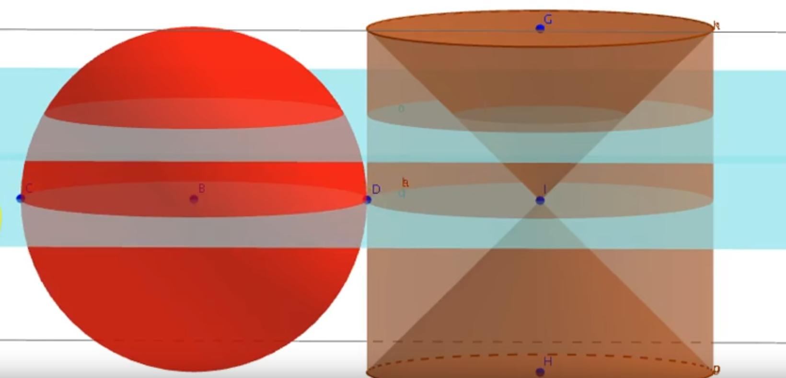

Dimostrazione del volume di una sfera
I nostri protagonisti
Dimostrazione
Consideriamo una sfera di raggio r e un cilindro circoscritto alla circonferenza.
Per comodità separiamo i due solidi.
All’interno del Cilindro consideriamo due coni le cui basi corrispondono con le basi del cilindro, e i
due vertici si uniscono al centro del solido.
⚡ Definizione
Il risultato dei due coni posto con vertici opposti è chiamato Clessidra.
Mentre tutta la parte che non è clessidra viene chiamata Anticlessidra
La dimostrazione verrà fatta applicando il principio di Cavalieri.
⚡ Definizione
Il principio di Cavalieri:
Se due solidi hanno uguale altezza e se le sezioni tagliate da piani paralleli alle basi e ugualmente distanti da queste stanno sempre in un dato rapporto, anche i volumi dei solidi staranno in questo rapporto.
Per iniziare
Vengono intersecati i solidi con due piani: uno esattamente al centro di entrambi i solidi, mentre l’altro più in alto.
Considerando il piano in basso che seziona la sfera, notiamo che la parte sezionata è un cerchio con raggio r.
Considerando l’area della parte sezionata nell’anticlessidra , notiamo che anche la sua parte sezionata è un cerchio con raggio r.
🤔 Si comincia a vedere qualcosa, no?
Consideriamo adesso il piano in alto.
La parte sezionata nella sfera è un cerchio con raggio inferiore al raggio di prima, che per comodità chiameremo R.
Nel cilindro, invece, viene sezionata una corona cicolare nella parte dell’anticlessidra con superficie uguale al cerchio sezionato nella sfera.
🚀 Applichiamo il principio di Cavalieri
Possiamo scrivere le formule per ottenere l'area dei settori del piano:
Per ottenere il raggio, ci basta applicare il teorema di Pitagora, prendendo come cateto l’altezza del piano rispetto al centro della sfera, e come ipotenusa la distanza tra la circonferenza del settore circolare e il centro della sfera
Possiamo dunque riscrivere la formula:
Per quanto riguarda il cilindro:
È evidente che la distanza tra il centro del cilindro e la base superiore è congruente al raggio delle basi del cilindro stesso.
Applicando il principio di Cavalieri notiamo che...
🎉 La sfera e l’anticlessidra hanno lo stesso volume
πR² è l’area di base, moltiplicata per l’altezza 2R è il volume totale del cilindro.
Sottraiamo da questo il doppio del volume di un cono:
1/3πR² è l’area della base
R è l’altezza del cono.
Semplificando otteniamo: